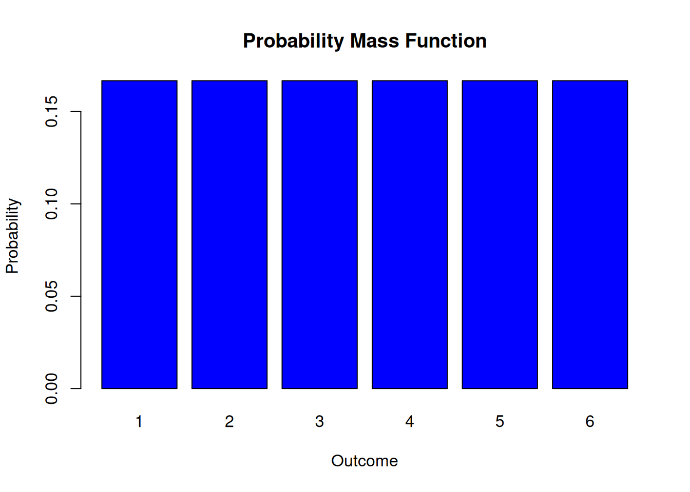
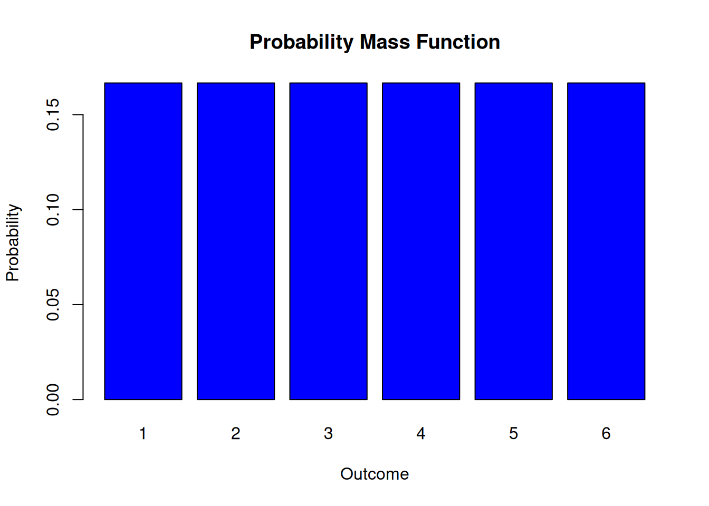
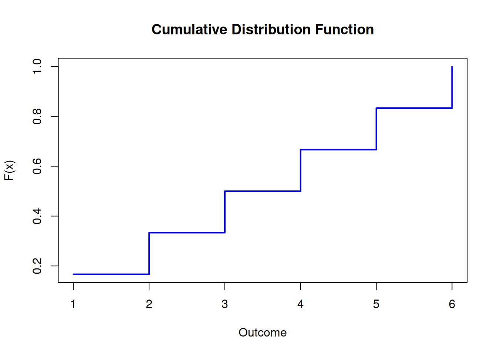

x <- 1:6
prob <- rep(1/6, 6)
barplot(prob, names.arg = x, col = "blue",
main = "Probability Mass Function",
xlab = "Outcome",
ylab = "Probability")
Random variables are the main mathematical tools that allow us to quantify and analyze uncertainty in Finance for complex portfolios and other financial contexts like risk management and credit risk analysis. Whether we are modeling the returns of a portfolio, assessing risk, or simulating market dynamics, random variables provide the foundation for probabilistic reasoning.
Throughout the previous lectures, we have encountered concepts such as conditional probabilities, dependencies, and independence. These ideas have helped us build intuition for modeling uncertainty. However, as we move into more advanced applications like portfolio risk modeling and asset price dynamics, a more explicit and formal treatment of random variables becomes unavoidable.
Random variables are at the core of probability theory, serving as a bridge between real-world phenomena and mathematical models. They allow us to represent uncertain outcomes numerically and provide a framework for analyzing those outcomes using tools such as expected value, variance, and covariance. These measures are indispensable for understanding and managing financial risk.
Random variables are not just theoretical constructs—they play a vital role in applications like:
By the end of this lecture, you will:
We will proceed as follows:
Let’s begin by exploring what random variables are and why they are so central to understanding uncertainty in finance.
A random variable is a numerical outcome of a random phenomenon. Formally, a random variable is a function that assigns a real number to each outcome in the sample space of a random experiment. More explicitly:
A random variable \(X\) is a function \(X:\mathcal{S} \to \mathbb{R}\) from the sample space (the set of all possible outcomes of the random experiment) to the real numbers.
This formal definition allows us to generalize and analyze a wide variety of real-world scenarios. For instance:
By explicitly recognizing these as random variables, we can now apply a systematic framework to quantify their behavior and analyze them.
Note that it is a widely held convention in probability theory to use capital letters such as \(X\) and \(Y\) etc. as symbols of a random variable.
Random variables come in two varieties, depending on the properties of the sample space \({\cal S}\). If the sample space is a finite or countably finite set, the sample space is discrete and we talk of a discrete random variables.
Sometimes it is natural to consider continuous sample spaces. For example when we consider the return of an asset over a year or the price of a stock at a specific time. In this case we call a random variable continuous. Continuity comes with the need to mount a bigger mathamtical machinery than we will use in this course. We will discuss continuous random variabls in the next lecture. Her we stick with the concept of a distcrete random variable.
A random variable is characterized by its probability distribution, which describes how probabilities are assigned to its possible values.
The probability distribution of a discrete random variable is described by its probability mass function (PMF): \[\begin{equation*} P(X = x) = p(x) \end{equation*}\] where \(p(x)\) satisfies:
We can visualize a PMF. Consider a random variable \(X\) that represents the outcome of rolling a fair six-sided die. The PMF is: \(P(X = x) = \frac{1}{6}, \quad x = 1, 2, 3, 4, 5, 6\).
This can be visualized as a bar plot:
x <- 1:6
prob <- rep(1/6, 6)
barplot(prob, names.arg = x, col = "blue",
main = "Probability Mass Function",
xlab = "Outcome",
ylab = "Probability")
This plot shows that each outcome has an equal probability of \(\frac{1}{6}\) symbolized as a bar. The geometry of this bar has no meaning. The bars could be thinner or thicker while displaying the same information.
Let me discuss some common confusions that arise often with understanding the cocnept of a random variable.
Random Variable vs. Outcome: A random variable is not the same as an individual outcome. It is a function that assigns values to outcomes. The confusion is partially created by the name. Maybe a better term would be a random mapping. Anyway, keep in mind that a random variable is a function.
Probability Distribution vs. Histogram: A probability distribution represents theoretical probabilities. Don’t mix this concept up with the concept of a histogram, known from statistics and data analysis, which shows frequencies of empirical data.
Discrete vs. Continuous: Discrete variables take specific values (e.g., dice outcomes), while continuous variables can take any value in a range. Dealing with continuous variables needs specifc tools which we discuss in lecture 5.
Think of scenarios where you could define a discrete random variable.
For instance:
Simulate and visualize the PMF of these examples in R. Use the barplot() function to create intuitive visualizations.
A related concept to the probability mass function (PMF), is the cumulative distribution function (CDF). It can also be used to describe a discrete random variable. The CDF provides the probability that the random variable \(X\) takes a value less than or equal to a specific value \(x\):
The cumulative distribution function (CDF) of a discrete random variable \(X\) is defined as: \[F(x) = P(X \leq x) = \sum_{t \leq x} P(X = t),\]
where \(F(x)\) is non-decreasing and satisfies:
Consider again the random variable \(X\) representing the outcome of rolling a fair six-sided die. The PMF is: \[P(X = x) = \frac{1}{6}, \quad x = 1, 2, 3, 4, 5, 6.\]
The CDF, \(F(x)\), can be computed as:
The CDF can be visualized as a step function, showing the cumulative probabilities:
x <- 1:6
cdf <- cumsum(rep(1/6, 6))
plot(x, cdf, type = "s", col = "blue", lwd = 2,
main = "Cumulative Distribution Function",
xlab = "Outcome",
ylab = "F(x)")
Here are some key points to keep in mind when working with cumulative distribution functions (CDFs):
If you’re ever unsure, visualize the CDF to better understand how probabilities accumulate!
The concepts of a probability mass function (PMF) and cumulative distribution function (CDF) can be extended to more than one random variable. When working with multiple random variables, we are often interested in their joint distribution, which describes how they behave together, and conditional distributions, which describe how one variable behaves given specific information about another. I discuss here the generalisation to two to avoid the tedious and sometimes confusing index notation that would be needed when we go beyond two dimensions. Two dimensions can be furthermore visualized helping our intuition. All of the follwing generalizes to more than two random variables.
The joint PMF of two discrete random variables \(X\) and \(Y\) is defined as: \[P(X = x, Y = y) = p(x, y),\] where \(p(x, y)\) satisfies:
Let me give an example: Imagine rolling two fair six-sided dice. Let \(X\) and \(Y\) represent the outcomes of the first and second dice, respectively. The joint PMF is: \[P(X = x, Y = y) = \frac{1}{36}, \quad x, y = 1, 2, 3, 4, 5, 6.\]
This joint PMF captures the probability of every possible pair of outcomes, such as \((X = 2, Y = 5)\).
A visualization tool for two dimensional PMFs is the heatmap. Consider as an example a heatmap of two biased dice.
# Define the outcomes and probabilities for two biased dice
outcomes <- 1:6
prob_die1 <- c(0.05, 0.1, 0.2, 0.25, 0.2, 0.2) # Probabilities for die 1
prob_die2 <- c(0.1, 0.15, 0.2, 0.25, 0.2, 0.1) # Probabilities for die 2
# Compute the joint PMF as the outer product of the two probability vectors
joint_pmf <- outer(prob_die1, prob_die2)
# Create a heatmap using the image() function
image(
1:6, 1:6, joint_pmf,
col = colorRampPalette(c("white", "blue"))(100),
xlab = "Outcome of Die 2",
ylab = "Outcome of Die 1",
main = "Heatmap of Joint PMF (Two Biased Dice)",
axes = FALSE
)
# Add axis labels
axis(1, at = 1:6, labels = outcomes)
axis(2, at = 1:6, labels = outcomes)
# Add a color legend
legend(
"topright",
legend = round(seq(min(joint_pmf), max(joint_pmf), length.out = 5), 3),
fill = colorRampPalette(c("white", "blue"))(5),
title = "Probability"
)
Here you see immediately that something must be going on with the dice. Would the dice be fair there should be a uniform color all over the heatmap with a color at the value of \(1/36\) or \(0.03\). Try it!
In a similar way as in the case of the PMF we can define:
The joint CDF of two random variables \(X\) and \(Y\) is defined as: \[F(x, y) = P(X \leq x, Y \leq y).\]
This function provides the cumulative probability for pairs of random variables being less than or equal to specified values.
Finally when we have more than one random variable we encounter conditional distributions.
When we have additional information about one random variable, we can refine our understanding of the other through a conditional distribution.
The conditional PMF of \(X\) given \(Y = y\) is:
\[P(X = x \mid Y = y) = \frac{P(X = x, Y = y)}{P(Y = y)},\] provided \(P(Y = y) > 0\).
Can joint PMFs include dependent variables? Yes, joint PMFs can include dependent variables. In fact, joint PMFs are a powerful tool for describing the relationship between two (or more) discrete random variables, whether they are independent or dependent.
For independent random variables \(X\) and \(Y\), the joint PMF satisfies: \(P(X = x, Y = y) = P(X = x) \cdot P(Y = y)\)
The probabilities of \(X\) and \(Y\) are completely separate and don’t influence each other. Example: Rolling two fair dice where the outcome of one die does not influence the other.
For dependent random variables, the joint PMF does not satisfy the independence condition. Instead, the joint PMF captures the interaction between \(X\) and \(Y\). For example: \(P(X = x, Y = y) \neq P(X = x) \cdot P(Y = y)\).
The probabilities of \(X\) and \(Y\) are intertwined, reflecting their dependency. A classical example is the drawing two cards from a deck without replacement. Let \(X\) be the value of the first card, and \(Y\) the value of the second card. Once the first card is drawn, the probabilities for \(Y\) change because there is one less card in the deck.
The dependency between (X) and (Y) can also be described using conditional probabilities:
For dependent random variables \(X\) and \(Y\) the joint PMF satisfies \[\begin{equation*} P(X = x, Y = y) = P(X = x \mid Y = y) \cdot P(Y = y). \end{equation*}\]
This representation emphasizes how the probability of \(X\) depends on \(Y\). For instance, in the dice example, if one die is biased to always match the other, \(P(X = x \mid Y = y) = 1\) when \(x = y\).
Here’s an example of dependent dice implemented in R:
# Define a joint PMF for dependent dice: one die matches the other
outcomes <- 1:6
joint_pmf <- diag(1/6, 6, 6) # Probability of matching outcomes is 1/6 for each pair
# Create heatmap for the dependent joint PMF
image(
1:6, 1:6, joint_pmf,
col = colorRampPalette(c("white", "blue"))(100),
xlab = "Outcome of Die 2",
ylab = "Outcome of Die 1",
main = "Heatmap of Joint PMF (Dependent Dice)",
axes = FALSE
)
axis(1, at = 1:6, labels = outcomes)
axis(2, at = 1:6, labels = outcomes)
# Add a color legend
legend(
"topright",
legend = round(seq(min(joint_pmf), max(joint_pmf), length.out = 5), 3),
fill = colorRampPalette(c("white", "blue"))(5),
title = "Probability"
)
Keep in mind:
When working with random variables, we often need to summarize their behavior in a way that allows us to make decisions, compare outcomes, or model uncertainty. This is where the concepts of expected value, variance, and covariance come into play:
Expected value provides a measure of the central tendency of a random variable, giving us a “weighted average” that reflects the most likely or typical outcome over the long run. It allows us to predict the average result in situations with uncertainty.
Variance and its square root, the standard deviation, quantify the spread or variability of a random variable’s outcomes. These measures are crucial for understanding risk in contexts like finance, where variability often corresponds to uncertainty or volatility.
Covariance extends this idea to pairs of random variables, capturing how changes in one variable are related to changes in another. This is particularly important in portfolio theory, where understanding how asset returns move together enables better diversification and risk management.
Together, these tools provide a mathematical framework for understanding, summarizing, and modeling uncertainty, making them indispensable in fields ranging from finance to engineering to data science.
So let us dive into the formal definitions.
The expected value (or mean) of a random variable is a summary measure that captures the central tendency of its distribution. It represents the long-run average value of the variable if the experiment is repeated infinitely often.
The expected value \(\mathrm{E}(X)\) of a discrete random variable \(X\) is the probability-weighted sum of all its possible values: \[ \mathrm{E}(X) = \sum_{i=1}^{n} x_i p(x_i), \] where \(x_i\) are the possible values of \(X\) and \(p(x_i)\) are their associated probabilities.
Note that for countably infinite outcomes, convergence conditions are required, but we focus on finite cases here.
As an example, consider a fair six-sided die. The possible outcomes are \(\{1, 2, 3, 4, 5, 6\}\), each with probability \(1/6\). The expected value is:
# Expected value of a fair die
outcomes <- 1:6
probabilities <- rep(1/6, 6)
expected_value <- sum(outcomes * probabilities)
expected_value # output[1] 3.5Although the expected value is 3.5, this value will never actually occur in a single roll—it is a theoretical average that represents the long-term central tendency of the outcomes if the die is rolled repeatedly. In other words, the expected value is not necessarily a possible outcome but rather a weighted average that balances all possible outcomes according to their probabilities. This highlights a common misunderstanding: the expected value is not a prediction of what will happen in a single trial, but a summary of what we can expect over many repetitions of the experiment.
While the expected value provides the central tendency, the variance measures the spread of a random variable around its expected value.
The variance of \(X\) is the expected value of the squared deviations from its expected value: \[ \mathrm{Var}(X) = \mathrm{E}[(X - \mathrm{E}(X))^2]. \]
For discrete random variables, this can be computed as: \[ \mathrm{Var}(X) = \sum_{i=1}^{n} \left(x_i - \mathrm{E}(X)\right)^2 p(x_i). \]
Using algebra, variance can also be written as: \[ \mathrm{Var}(X) = \mathrm{E}[X^2] - (\mathrm{E}[X])^2. \]
The standard deviation is the square root of the variance: \[ \mathrm{SD}(X) = \sqrt{\mathrm{Var}(X)}. \] It provides a measure of spread in the same units as the random variable.
Using the fair die example, calculate the variance and standard deviation:
# Variance and standard deviation of a fair die
E_X_squared <- sum(outcomes^2 * probabilities)
variance <- E_X_squared - (expected_value^2)
std_dev <- sqrt(variance)
variance # Output: 2.916667[1] 2.916667std_dev # Output: 1.707825[1] 1.707825The covariance measures the linear relationship between two random variables.
For two random variables \(X\) and \(Y\) their covariance is defined as It is defined as: \[ \mathrm{Cov}(X, Y) = \mathrm{E}[(X - \mathrm{E}(X))(Y - \mathrm{E}(Y))]. \]
Alternatively: \[ \mathrm{Cov}(X, Y) = \mathrm{E}[XY] - \mathrm{E}[X]\mathrm{E}[Y]. \] If \(X\) and \(Y\) are independent, then \(\mathrm{Cov}(X, Y) = 0\). However, the converse is not true: a covariance of 0 does not imply independence.
Consider two dice, \(X\) and \(Y\), rolled simultaneously. Let \(X\) represent the outcome of the first die and \(Y\) the second. If the dice are independent, the covariance is 0:
# Covariance of two independent dice
joint_pmf <- outer(probabilities, probabilities)
E_XY <- sum(outcomes %*% t(outcomes) * joint_pmf)
covariance <- E_XY - (expected_value^2)
covariance # Output: 0[1] 0The correlation coefficient normalizes the covariance to a dimensionless measure: \[ \rho(X, Y) = \frac{\mathrm{Cov}(X, Y)}{\mathrm{SD}(X) \cdot \mathrm{SD}(Y)}. \] The correlation coefficient ranges from \(-1\) (perfect negative correlation) to \(1\) (perfect positive correlation).